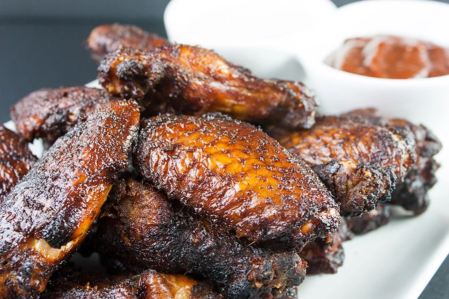

Smoked Chicken Wings

The Secret to Smoked Chicken Wings
Smoked chicken wings are a flavorful twist on a classic favorite, slow-cooked over wood chips to infuse a rich, smoky taste. The wings develop crispy skin while staying juicy and tender inside. Perfect for serving with your favorite sauces or enjoying on their own for a mouthwatering snack or appetizer.
Ingredients
Rub
- 2 Tbs olive oil
- 2 Tbs smoked paprika
- 1 tps onion powder
- 2 tps kosher salt
- 1 tps cayenne
- 1 Tbs chili powder
- 1 tps cumin
- 1 tps garlic powder
- 3 tps fresh ground pepper
Instructions
- Separate wings into drummettes and wings, (if necessary)., and pat dry
- Combine spices to form the rub.
- Place wings in a container,add and mix rub and olive oil over chicken.
- Let wings rest for an hour.
- Heat smoker or grill to a temperature between 225-250 F.
- Place wings over direct heat.
- Add wood for the smoke to coals, (if applicable)
- Smoke for 2 to 2 1/2 hour, maintaining a constant smoke for at least 1 1/2 hours. The chicken should have an internal temperature of 160 F.
- Place directly over coals to crisp, approx. 5mins each side.
- Remove from the heat and let rest for approx 10mins